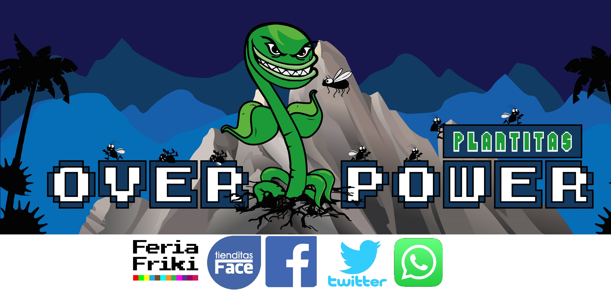

Somos una empresa dedicada a la producción y el cuidado de estas geniales plantas,
ademas de entregar ayuda y difundir aun más su existencia para asi acabar
con los mitos sobre ellas.
Actualmente hay mucha desinformación y sobre todo miedo al oir sobre plantas carnívoras
pero nosotros nos encargamos de que ese miedo no prospere.
Las Plantas Carnívoras son el equilibrio perfecto entre una mascota y una planta, ademas
de un excelente controlador de plagas.
¿Quién no ha tenido en su casa la indeseable visita de moscas, mosquitos o zancudos?
Bueno con Plantitas OverPower diles GG a los insectos
Actualmente nos pueden encontrar en Facebook, Twitter y en la FeriaFriki
